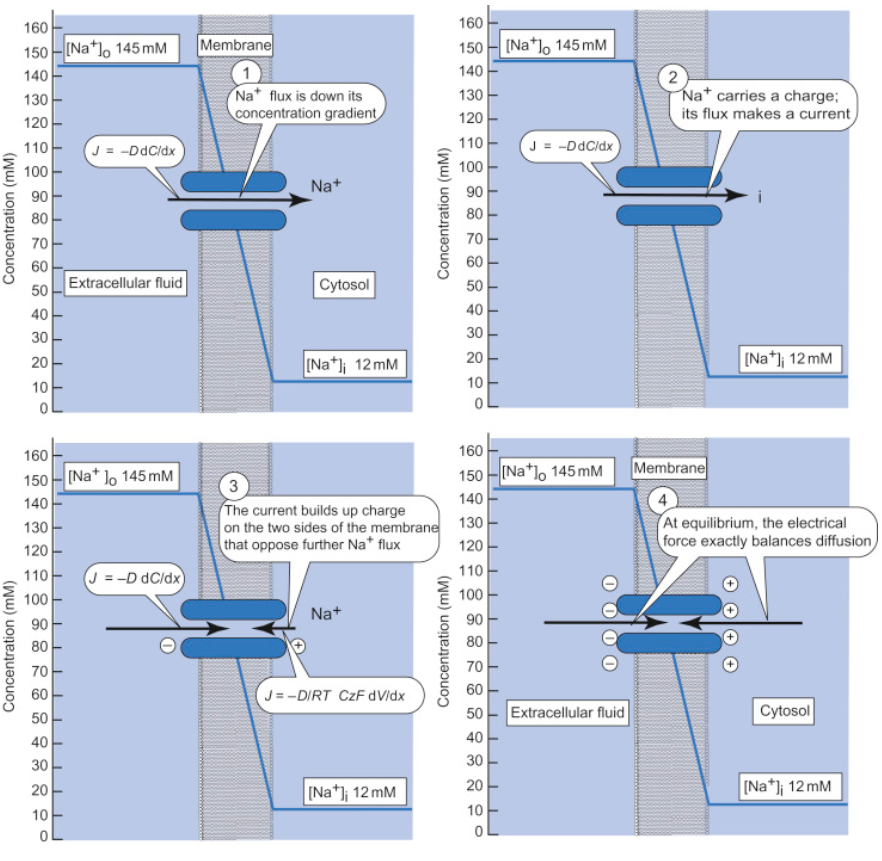

Table 3.1 shows our results for three different famous published cases. It looks like the calibration of the concentration of negative and positive ions needs scaling and the measurement of comprises issues.
| Ion | [In] | [Out] | ||||
|---|---|---|---|---|---|---|
| [mM] | [mM] | [mV] | [mV] | [mV] | [mV] | |
| Squid [13] T=293 Width= 3 [nm] Field= 14.0 [MV/m] | ||||||
| 400 | 20 | 41.9 | 41.4 | -62.0 | ||
| 50 | 440 | |||||
| 40 | 560 | 41.9 | 42.0 | 63.0 | ||
| 10 | ||||||
| ∗ used for the published value 0.4 | ||||||
| Frog muscle (Conway) T=293 W = 8 [nm] E= 9.6 [MV/m] | ||||||
| 124 | 2.25 | 88.9 | 83.6 | -125.4 | ||
| 10.4 | 109 | |||||
| 1.5 | 77.5 | 88.9 | 82.7 | 124.1 | ||
| 2.1 | ||||||
| ∗ used for the published value 4.9 | ||||||
| Mammalian cell T=310 W= 6 [nm] E= 11.1 [MV/m] | ||||||
| 140 | 5 | 57.7 | 57.3 | -85.8 | ||
| 15 | 145 | |||||
| 4 | 110 | 57.7 | 56.9 | 85.9 | ||
| 5 | ||||||
| ∗ used for the published value 0.0001 | ||||||
| ions only [75] T=310 W= 6 [nm] E = 10.0 [MV/m] | ||||||
| 12 | 145 | 60.7 | 66.6 | |||
When calculating the values in Table 3.1, we used and employed the membrane’s thickness data from various publications to demonstrate that our theoretical approach is correct and that using the correct data can provide even the absolute values of the membrane potential. The higher-than-expected value of may suggest that the ions and membrane’s double layers in the electrolyte may also play a role. Dedicated, complete investigations can reveal the details.
